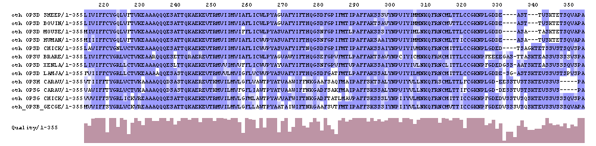

| 
Fig 4.7. Results of a CLUSTALW alignment performed on the EBI server, which has the option of viewing the alignment using the Jalview applet. The amino acid shading scheme (blue) is the Blosum62 score, with an overall score shown below the alignment (purple). |